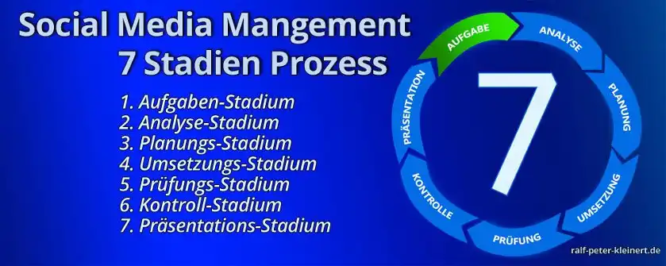

Der Social Media Management Prozess
State of Social Media Status
Weiter im Lehrgang
Übersicht Lehrgang
Der 7 Stadien Prozess
Um Antworten zu finden und um den State of Social Media Status festzustellen, wird der Social Media Management Prozess gestartet. Dieser erstreckt sich jedoch auf das gesamte Netz, nicht nur auf Social Media Plattformen. Dieser Prozess kann in 7 Stadien unterteilt werden, aber auch hier ist das Vorgehen individuell. Auch müssen diese Stadien nicht immer in dieser Reihenfolge stehen. Im Laufe des Prozesses werden die Stadien mehrmals und unterschiedlich gewichtet durchlaufen. Der #7StadienProzess:

- Aufgaben-Stadium
- Analyse-Stadium
- Planungs-Stadium
- Umsetzungs-Stadium
- Prüfungs-Stadium
- Kontroll-Stadium
- Präsentations-Stadium
1. Im Aufgaben-Stadium wird durch das Unternehmen eine Wunsch bzw. Zielvorgabe formuliert. Z. B. "Wir, Firma Elektro-Müller-AG möchten den Verkauf unserer Waschmaschinen steigern und mehr positive Kundenstimmen in den sozialen Medien generieren."
2. Das Analyse-Stadium ist sehr umfangreich und hat einen gesonderten Analyse-Bereich auf meiner Website. Die Aufgabenstellung bildet das Fundament. Es werden unter anderem Suchmaschinen und soziale Netzwerke durchsucht. Auch die Nutzer und die Konkurrenz sowie der finanzielle Background des Unternehmens werden analysiert. Es werden also detaillierte Daten erhoben um sich einen Überblick zu verschaffen.
Es ist notwendig systematisch vorzugehen und Informationen über die derzeitigen und zukünftig zu erwartenden Rahmenbedingungen des Unternehmens zu sammeln, diese auszuwerten und damit Social Media Entscheidungen zu begründen. Auch unternehmensexterne Faktoren gehören zum Analyse-Stadium.
Die Analysen decken Stärken, Chancen und Potenziale des Unternehmens, aber auch Schwächen und Risiken auf. Zusammengefasst stellen die Analysen den Social Media Status, den State of Social im Markt fest.
3. Im Planungs-Stadium werden die Zielvorgabe des Unternehmens und die Analysedaten in Einklang gebracht. Es wird der Plan entwickelt diese Ziele zu erreichen. Dieser Plan ist das Social Media Konzept. Das gesamte Vorgehen und welche Maßnahmen getroffen werden müssen, werden im Konzept ausformuliert. Wo, wann, wie, was gepostet oder Veröffentlicht wird ist ebenfalls Teil des Konzepts. Der Postingplan nimmt nochmals eine eigene Planung in Anspruch.
Das Konzept muss ein in sich schlüssiger Handlungsplan sein, der die Ziele in den Fokus nimmt und geeignete Maßnahmen zu Erreichung der Ziele festlegt. Die Ziele werden detailliert ausgearbeitet, die Social-Media-Strategie wird formuliert und der Social-Media-Mix, also die sozialen Netzwerke und die Werkzeuge werden ausgewählt. Im Folgenden gehe ich noch näher auf das Konzept ein.
4. Im Umsetzungs-Stadium, werden die Maßnahmen aus dem Konzept abgearbeitet. Das können z. B. Drucken von Visitenkarten, das Erstellen einer Website, die Gestaltung einer Grafik für Facebook, das Erstellen eines Videos für YouTube oder das Gestalten eines Fragebogens für Twitter sein. Die gesamten Postings in den Netzwerken werden gestützt durch das Konzept geplant und durchgeführt.
Sämtliche Aktivitäten die nun in den sozialen Media durchgeführt werden müssen fortlaufen durch das Social-Media-Monitoring beobachtet werden. Das Monitoring deckt schnell auf, wo die Strategie funktioniert und wo nachgebessert werden muss. Es wird beobachtet, ob die Ziele erreicht werden, oder ob die gewählten Instrumente geeignet sind. Dieses Monitoring ist fortwährend, also dauerhaft durchzuführen, denn die sozialen Medien verändern sich und diese Veränderungen müssen schnell festgestellt werden.
5. Nach der Umsetzung geht es in das Prüfungs-Stadium und es wird geschaut, ob das Konzept richtig umgesetzt wurde. Es werden unter anderem geprüft, ob die Postings richtig abgesetzt sind, ob Rechtschreibfehler in den Postings sind, die Kontaktdaten korrekt sind - ob alles seine Richtigkeit hat. Es kann immer passieren, dass sich Fehler einschleichen, auch wenn man noch so Strukturiert arbeitet.
Es ist zu prüfen ob Kommentarfunktionen aktiviert, die richtigen Privatsphäreneinstellungen getroffen sind, Anzeigen richtig geschaltet und bezahlt sind, bzw. das Konto gedeckt ist. Wenn sich hier ein Fehler einschleicht und dieser erst nach Tagen oder Wochen entdeckt wird, kann das die gesamten Social-Media-Ziele beeinflussen und im schlimmsten Falle kann durch falsche Platzierung viel Geld verbrannt werden.
6. Im etwas späteren Kontroll-Stadium wird geprüft, ob die Maßnahmen aus dem Konzept die richtigen Effekte erzielen. Werden die Ziele die formuliert wurden, tatsächlich erreicht? Abweichungen von der Zielvorgabe werden protokolliert, analysiert und das Konzept gegebenenfalls angepasst. Das Umsetzungs-Stadium folgt wieder nach der Optimierung durch das Kontroll-Stadium.
In diesem Stadium werden auch die nicht funktionierenden Maßnahmen genau ausformuliert um später und zukünftig solche Fehler zu vermeiden. So kann nach und nach viel wirkungsvoller in Social Media gearbeitet werden, es baut sich ein Unternehmensspezifischer Fahrplan auf und dieser braucht die Erfahrungen, die das Unternehmen in den sozialen Medien sammelt.
7. Im Präsentations-Stadium werden Kunden, das Unternehmen, der Vorgesetzte oder der Chef umfassend unterrichtet. Es werden Ist- und Soll-Situation, der Plan und die getätigte Umsetzung möglichst leicht verständlich in Worte gefasst. Die Untermauerung mit Tabellen und Grafiken sollte für eine verständliche Datenpräsentation immer eine Rolle spielen.
Auch der Blick in die Zukunft, vor allem durch die Erfahrungen, die durch die Social-Media-Maßnahmen gesammelt wurden, darf hier gewagt werden. Es sollte zu Beginn recht zeitnah eine Präsentation geben, um die involvierten Personen auf Stand zu bringen, welche Maßnahmen überhaupt gestartet wurden. Im weiteren Verlauf sollte eine monatliche Präsentation erfolgen, die die Wirkung der Maßnahmen aufzeigt und ein schnelles Eingreifen bei nicht funktionierenden Maßnahmen ermöglicht. In 6 Monaten kann viel Geld verloren sein.
Tipp
Bei besonders schweren Problemen, wie z. B. einem Shitstorm ist eine sofortige Analyse und unmittelbar folgende Präsentation abzuhalten um geeignete Gegenmaßnahmen einzuleiten..